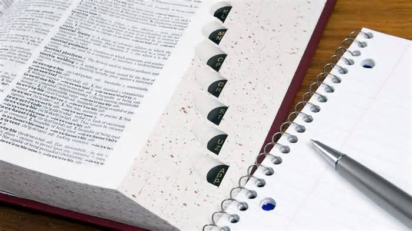

"En el País Vasco, casi 9 de cada 10 municipios están entre el 25% con mayor renta de España, en Murcia ocurre lo contrario, más del 90% está entre el 25% con menor"

La renta neta media por persona en España ha experimentado una subida del 6% hasta situarse cerca de los 16.000 euros anuales, según los últimos datos del Instituto Nacional de Estadística (INE). Sin ...
La renta neta media por persona en España ha experimentado una subida del 6% hasta situarse cerca de los 16.000 euros anuales, según los últimos datos del Instituto Nacional de Estadística (INE). Sin ...
Noticia publicada por COPE. Consulta el artículo original en COPE para más información.